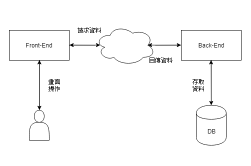

<!DOCTYPE html>
<html>
<head><meta name="generator" content="Hexo 3.8.0">
  <meta charset="utf-8">
  
  <title>程式碼追蹤定位 | Mars&#39;s Blog</title>
  <meta name="viewport" content="width=device-width, initial-scale=1, maximum-scale=1">
  <meta name="description" content="一、說明程式的開發及維護時，對程式掌握度的高低對開發維護的效率與質量影響很大，但我們又不可能將做過的程式永遠記得牢牢的，總會有其他人的改動，總會接觸其他人編寫的程式，所以個人對程式的閱讀追蹤能力很大一部份代表個人實力，在此介紹一些php web程式的閱讀追蹤方式。 二、程式結構與追蹤2.1 web使用模型網頁使用流程可解析成(MVC)：  User輸入網址 Browser對Controller要求">
<meta name="keywords" content="dev,coding,info,debug,trace">
<meta property="og:type" content="article">
<meta property="og:title" content="程式碼追蹤定位">
<meta property="og:url" content="https://blog.mars-world.net/2019/05/31/code-tracking/index.html">
<meta property="og:site_name" content="Mars&#39;s Blog">
<meta property="og:description" content="一、說明程式的開發及維護時，對程式掌握度的高低對開發維護的效率與質量影響很大，但我們又不可能將做過的程式永遠記得牢牢的，總會有其他人的改動，總會接觸其他人編寫的程式，所以個人對程式的閱讀追蹤能力很大一部份代表個人實力，在此介紹一些php web程式的閱讀追蹤方式。 二、程式結構與追蹤2.1 web使用模型網頁使用流程可解析成(MVC)：  User輸入網址 Browser對Controller要求">
<meta property="og:locale" content="default">
<meta property="og:image" content="https://blog.mars-world.net/2019/05/31/code-tracking/web-request.png">
<meta property="og:image" content="https://blog.mars-world.net/2019/05/31/code-tracking/web-trace-01.png">
<meta property="og:image" content="https://blog.mars-world.net/2019/05/31/code-tracking/web-trace-02.png">
<meta property="og:image" content="https://blog.mars-world.net/2019/05/31/code-tracking/web-trace-03.png">
<meta property="og:image" content="https://blog.mars-world.net/2019/05/31/code-tracking/web-trace-04.png">
<meta property="og:image" content="https://blog.mars-world.net/2019/05/31/code-tracking/web-trace-11.png">
<meta property="og:image" content="https://blog.mars-world.net/2019/05/31/code-tracking/web-trace-12.png">
<meta property="og:image" content="https://blog.mars-world.net/2019/05/31/code-tracking/web-trace-13.png">
<meta property="og:image" content="https://blog.mars-world.net/2019/05/31/code-tracking/web-trace-04.png">
<meta property="og:updated_time" content="2019-07-30T14:45:24.973Z">
<meta name="twitter:card" content="summary">
<meta name="twitter:title" content="程式碼追蹤定位">
<meta name="twitter:description" content="一、說明程式的開發及維護時，對程式掌握度的高低對開發維護的效率與質量影響很大，但我們又不可能將做過的程式永遠記得牢牢的，總會有其他人的改動，總會接觸其他人編寫的程式，所以個人對程式的閱讀追蹤能力很大一部份代表個人實力，在此介紹一些php web程式的閱讀追蹤方式。 二、程式結構與追蹤2.1 web使用模型網頁使用流程可解析成(MVC)：  User輸入網址 Browser對Controller要求">
<meta name="twitter:image" content="https://blog.mars-world.net/2019/05/31/code-tracking/web-request.png">
  
  
  
    <link href="//fonts.googleapis.com/css?family=Source+Code+Pro" rel="stylesheet" type="text/css">
  

  <link rel="stylesheet" href="https://maxcdn.bootstrapcdn.com/bootstrap/3.3.6/css/bootstrap.min.css" integrity="sha384-1q8mTJOASx8j1Au+a5WDVnPi2lkFfwwEAa8hDDdjZlpLegxhjVME1fgjWPGmkzs7" crossorigin="anonymous">

  <link rel="stylesheet" href="https://maxcdn.bootstrapcdn.com/font-awesome/4.5.0/css/font-awesome.min.css" integrity="sha384-XdYbMnZ/QjLh6iI4ogqCTaIjrFk87ip+ekIjefZch0Y+PvJ8CDYtEs1ipDmPorQ+" crossorigin="anonymous">

  <link rel="stylesheet" href="/css/styles.css">
  

</head>
</html>
<body>
  <nav class="navbar navbar-inverse">
  <div class="container">
    <!-- Brand and toggle get grouped for better mobile display -->
    <div class="navbar-header">
      <button type="button" class="navbar-toggle collapsed" data-toggle="collapse" data-target="#main-menu-navbar" aria-expanded="false">
        <span class="sr-only">Toggle navigation</span>
        <span class="icon-bar"></span>
        <span class="icon-bar"></span>
        <span class="icon-bar"></span>
      </button>
      
    </div>

    <!-- Collect the nav links, forms, and other content for toggling -->
    <div class="collapse navbar-collapse" id="main-menu-navbar">
      <ul class="nav navbar-nav">
        
          <li><a class href="/index.html">Home</a></li>
        
          <li><a class href="/archives/">Archives</a></li>
        
          <li><a class href="https://github.com/marshung24">GitHub</a></li>
        
      </ul>

      <!--
      <ul class="nav navbar-nav navbar-right">
        
      </ul>
      -->
    </div><!-- /.navbar-collapse -->
  </div><!-- /.container-fluid -->
</nav>

  <div class="container">
    <div class="blog-header">
  <h1 class="blog-title">Mars&#39;s Blog</h1>
  
    <p class="lead blog-description">Mars&#39;s learning record</p>
  
</div>

    <div class="row">
        <div class="col-sm-8 blog-main">
          <article id="post-code-tracking" class="article article-type-post" itemscope itemprop="blogPost">

  <header class="article-header">
    
  
    <h1 class="article-title" itemprop="name">
      程式碼追蹤定位
    </h1>
  


  </header>

  <div class="article-meta">
    <div class="article-datetime">
  <a href="/2019/05/31/code-tracking/" class="article-date"><time datetime="2019-05-31T11:35:08.000Z" itemprop="datePublished">2019-05-31</time></a>
</div>

    <div class="article-author">Mars Hung</div>
    
  <div class="article-category">
    <a class="article-category-link" href="/categories/info/">info</a>
  </div>


    <div class="article-reading">
  
  <span id="busuanzi_container_page_pv">文章閱讀量<span id="busuanzi_value_page_pv"></span>次</span>
  
</div>

  </div>
  <div class="article-inner">

    <div class="article-entry" itemprop="articleBody">
      
        
<div id="toc">
    <ol class="toc"><li class="toc-item toc-level-1"><a class="toc-link" href="#一、說明"><span class="toc-text">一、說明</span></a></li><li class="toc-item toc-level-1"><a class="toc-link" href="#二、程式結構與追蹤"><span class="toc-text">二、程式結構與追蹤</span></a><ol class="toc-child"><li class="toc-item toc-level-2"><a class="toc-link" href="#2-1-web使用模型"><span class="toc-text">2.1 web使用模型</span></a></li><li class="toc-item toc-level-2"><a class="toc-link" href="#2-2-字串搜尋方式追蹤"><span class="toc-text">2.2 字串搜尋方式追蹤</span></a></li><li class="toc-item toc-level-2"><a class="toc-link" href="#2-3-依流程追蹤"><span class="toc-text">2.3 依流程追蹤</span></a></li><li class="toc-item toc-level-2"><a class="toc-link" href="#2-4-插行號-檔名-字串方式追蹤"><span class="toc-text">2.4 插行號/檔名/字串方式追蹤</span></a><ol class="toc-child"><li class="toc-item toc-level-3"><a class="toc-link" href="#狀況一：當程式錯誤後會沒有任何輸出時"><span class="toc-text">狀況一：當程式錯誤後會沒有任何輸出時</span></a></li><li class="toc-item toc-level-3"><a class="toc-link" href="#狀況二：當想知道有哪些判斷式被執行時"><span class="toc-text">狀況二：當想知道有哪些判斷式被執行時</span></a></li></ol></li><li class="toc-item toc-level-2"><a class="toc-link" href="#2-5-追蹤呼叫歷程"><span class="toc-text">2.5 追蹤呼叫歷程</span></a></li><li class="toc-item toc-level-2"><a class="toc-link" href="#2-6-查看輸入輸出資料變化"><span class="toc-text">2.6 查看輸入輸出資料變化</span></a></li></ol></li></ol>
</div>

        <h1 id="一、說明"><a href="#一、說明" class="headerlink" title="一、說明"></a>一、說明</h1><p>程式的開發及維護時，對程式掌握度的高低對開發維護的效率與質量影響很大，但我們又不可能將做過的程式永遠記得牢牢的，總會有其他人的改動，總會接觸其他人編寫的程式，所以個人對程式的閱讀追蹤能力很大一部份代表個人實力，在此介紹一些php web程式的閱讀追蹤方式。</p>
<h1 id="二、程式結構與追蹤"><a href="#二、程式結構與追蹤" class="headerlink" title="二、程式結構與追蹤"></a>二、程式結構與追蹤</h1><h2 id="2-1-web使用模型"><a href="#2-1-web使用模型" class="headerlink" title="2.1 web使用模型"></a>2.1 web使用模型</h2><p>網頁使用流程可解析成(MVC)：</p>
<ol>
<li>User輸入網址</li>
<li>Browser對Controller要求View頁面</li>
<li>View對Controller發出ajax請求</li>
<li>Controller透過Model存取Database</li>
<li>Controller將資料ajax回應給View</li>
<li>View渲染畫面給User</li>
</ol>
<p></p>
<blockquote>
<p>從流程中可看出，View是web系統的起點跟終點</p>
</blockquote>
<h2 id="2-2-字串搜尋方式追蹤"><a href="#2-2-字串搜尋方式追蹤" class="headerlink" title="2.2 字串搜尋方式追蹤"></a>2.2 字串搜尋方式追蹤</h2><blockquote>
<p>適用：想要找到畫面內容所在程式碼</p>
</blockquote>
<ul>
<li><p>以 Yii 2 basic 預設頁面為例，假設這個頁面我從未接觸過<br></p>
</li>
<li><p>我想將「Congratulations!」改成「Congratulations-trace」時，可直接從頁面原始碼中的目標附近找一個不太可能重複的字串，如「class=”jumbotron”」<br></p>
</li>
<li><p>將字串「class=”jumbotron”」貼到IDE的全專案搜尋中尋找，如字串選得好，找到的可能目標會非常少，很容易確認目標。<br></p>
</li>
<li><p>修改後查看狀況，完成！<br></p>
</li>
</ul>
<blockquote>
<p>使用本方法，需注意不要選可能是組合字、變數等字串，大略可用tag, id, class, style名稱/值 為搜尋字串</p>
</blockquote>
<h2 id="2-3-依流程追蹤"><a href="#2-3-依流程追蹤" class="headerlink" title="2.3 依流程追蹤"></a>2.3 依流程追蹤</h2><blockquote>
<p>適用：想要找到畫面內容所在程式碼</p>
</blockquote>
<ul>
<li><p>從網址列可以得知目標是Controller: <strong>site</strong>, Method: <strong>index</strong><br></p>
</li>
<li><p>打開目標程式，可以找到目標view檔案<br></p>
</li>
<li><p>打開目標View，找到目標，修改後查看成果。完成！<br><br></p>
</li>
</ul>
<blockquote>
<p>使用本方法，需熟知framework運作流程及相關函式。</p>
</blockquote>
<h2 id="2-4-插行號-檔名-字串方式追蹤"><a href="#2-4-插行號-檔名-字串方式追蹤" class="headerlink" title="2.4 插行號/檔名/字串方式追蹤"></a>2.4 插行號/檔名/字串方式追蹤</h2><p>適用：</p>
<ul>
<li>狀況一：當程式錯誤後會沒有任何輸出時</li>
<li>狀況二：當想知道有哪些判斷式被執行時</li>
</ul>
<h3 id="狀況一：當程式錯誤後會沒有任何輸出時"><a href="#狀況一：當程式錯誤後會沒有任何輸出時" class="headerlink" title="狀況一：當程式錯誤後會沒有任何輸出時"></a>狀況一：當程式錯誤後會沒有任何輸出時</h3><p>如果要確定在執行哪段程式時發生錯誤，可在可能的錯誤點前插行號。</p>
<blockquote>
<p>下例假設<strong>資料處理</strong>掛了且沒有錯誤輸出。<br><figure class="highlight php"><table><tr><td class="gutter"><pre><span class="line">1</span><br><span class="line">2</span><br><span class="line">3</span><br><span class="line">4</span><br><span class="line">5</span><br><span class="line">6</span><br><span class="line">7</span><br><span class="line">8</span><br><span class="line">9</span><br><span class="line">10</span><br><span class="line">11</span><br><span class="line">12</span><br><span class="line">13</span><br><span class="line">14</span><br><span class="line">15</span><br><span class="line">16</span><br><span class="line">17</span><br><span class="line">18</span><br><span class="line">19</span><br><span class="line">20</span><br><span class="line">21</span><br><span class="line">22</span><br><span class="line">23</span><br><span class="line">24</span><br><span class="line">25</span><br><span class="line">26</span><br><span class="line">27</span><br><span class="line">28</span><br><span class="line">29</span><br><span class="line">30</span><br><span class="line">31</span><br><span class="line">32</span><br><span class="line">33</span><br><span class="line">34</span><br><span class="line">35</span><br><span class="line">36</span><br><span class="line">37</span><br><span class="line">38</span><br><span class="line">39</span><br><span class="line">40</span><br><span class="line">41</span><br><span class="line">42</span><br><span class="line">43</span><br><span class="line">44</span><br><span class="line">45</span><br><span class="line">46</span><br><span class="line">47</span><br><span class="line">48</span><br><span class="line">49</span><br></pre></td><td class="code"><pre><span class="line"><span class="comment">// 預設輸出</span></span><br><span class="line">$opt = [</span><br><span class="line">    <span class="string">'code'</span> =&gt; <span class="number">200</span>,</span><br><span class="line">    <span class="string">'message'</span> =&gt; <span class="string">'OK'</span>,</span><br><span class="line">];</span><br><span class="line"></span><br><span class="line"><span class="keyword">try</span> &#123;</span><br><span class="line">    <span class="comment">// 取得輸入資料</span></span><br><span class="line">    $post = $input-&gt;post();</span><br><span class="line">    <span class="keyword">echo</span> <span class="keyword">__LINE__</span>.<span class="string">"\n"</span>;</span><br><span class="line">    <span class="comment">// 初始化</span></span><br><span class="line">    $users = \app\service\Users::getInstance();</span><br><span class="line">    $rule = \app\service\Rule::getInstance();</span><br><span class="line">    $timeoff = \app\service\Timeoff::getInstance();</span><br><span class="line">    $punch = \app\service\Punch::getInstance();</span><br><span class="line">    $attend = \app\service\Attendance::getInstance();</span><br><span class="line"></span><br><span class="line">    <span class="keyword">echo</span> <span class="keyword">__LINE__</span>.<span class="string">"\n"</span>;</span><br><span class="line">    <span class="comment">// 輸入資料整理</span></span><br><span class="line">    $userData = $users-&gt;prepare($post);</span><br><span class="line"></span><br><span class="line">    <span class="keyword">echo</span> <span class="keyword">__LINE__</span>.<span class="string">"\n"</span>;</span><br><span class="line">    <span class="comment">// 資料驗証</span></span><br><span class="line">    <span class="keyword">if</span> (! $rule-&gt;validate($userData)) &#123;</span><br><span class="line">        <span class="keyword">echo</span> <span class="keyword">__LINE__</span>.<span class="string">"\n"</span>;</span><br><span class="line">        <span class="keyword">throw</span> <span class="keyword">new</span> Exceptioh(<span class="string">'Input error'</span>, <span class="number">400</span>);</span><br><span class="line">    &#125;</span><br><span class="line"></span><br><span class="line">    <span class="comment">// 取得相關資料</span></span><br><span class="line">    $timeoffData = $timeoff-&gt;get($userData[<span class="string">'id'</span>], $startDate, $endDate);</span><br><span class="line">    $punchData = $punch-&gt;get($userData[<span class="string">'id'</span>], $startDate, $endDate);</span><br><span class="line"></span><br><span class="line">    <span class="keyword">echo</span> <span class="keyword">__LINE__</span>.<span class="string">"\n"</span>; <span class="comment">// &lt;=== 因資料處理掛了，所以本行為最後一個輸出的行號</span></span><br><span class="line">    <span class="comment">// 資料處理</span></span><br><span class="line">    $attendData = $attend-&gt;workStatus($timeoff, $punch, $startDate, $endDate);</span><br><span class="line"></span><br><span class="line">    <span class="keyword">echo</span> <span class="keyword">__LINE__</span>.<span class="string">"\n"</span>;</span><br><span class="line">    <span class="comment">// 寫入資料</span></span><br><span class="line">    $attend-&gt;write($attendData);</span><br><span class="line">&#125; <span class="keyword">catch</span> (<span class="keyword">Exception</span> $e) &#123;</span><br><span class="line">    <span class="comment">// 錯誤處理</span></span><br><span class="line">    $opt = [</span><br><span class="line">        <span class="string">'code'</span> =&gt; $e-&gt;getCode(),</span><br><span class="line">        <span class="string">'message'</span> =&gt; $e-&gt;getMessage(),</span><br><span class="line">    ];</span><br><span class="line">&#125;</span><br><span class="line"></span><br><span class="line"><span class="comment">// 輸出結果</span></span><br><span class="line"><span class="keyword">return</span> $output-&gt;json($opt);</span><br></pre></td></tr></table></figure></p>
</blockquote>
<blockquote>
<p>上例可看出：</p>
<ul>
<li>最後一個輸出行號在<strong>資料處理</strong>之前</li>
<li>$rule-&gt;validate($userData)驗証有通過，因為沒有看到丟出例外前的那個行號</li>
<li>當然如果不嫌麻煩，也可以不用<strong>LINE</strong>行號(魔術常量)，而是自己定義輸出內容</li>
</ul>
</blockquote>
<h3 id="狀況二：當想知道有哪些判斷式被執行時"><a href="#狀況二：當想知道有哪些判斷式被執行時" class="headerlink" title="狀況二：當想知道有哪些判斷式被執行時"></a>狀況二：當想知道有哪些判斷式被執行時</h3><figure class="highlight php"><table><tr><td class="gutter"><pre><span class="line">1</span><br><span class="line">2</span><br><span class="line">3</span><br><span class="line">4</span><br><span class="line">5</span><br><span class="line">6</span><br><span class="line">7</span><br><span class="line">8</span><br><span class="line">9</span><br><span class="line">10</span><br><span class="line">11</span><br><span class="line">12</span><br><span class="line">13</span><br><span class="line">14</span><br><span class="line">15</span><br><span class="line">16</span><br><span class="line">17</span><br><span class="line">18</span><br><span class="line">19</span><br><span class="line">20</span><br><span class="line">21</span><br><span class="line">22</span><br><span class="line">23</span><br><span class="line">24</span><br><span class="line">25</span><br><span class="line">26</span><br><span class="line">27</span><br><span class="line">28</span><br><span class="line">29</span><br><span class="line">30</span><br><span class="line">31</span><br><span class="line">32</span><br><span class="line">33</span><br><span class="line">34</span><br><span class="line">35</span><br><span class="line">36</span><br><span class="line">37</span><br><span class="line">38</span><br><span class="line">39</span><br><span class="line">40</span><br><span class="line">41</span><br><span class="line">42</span><br><span class="line">43</span><br><span class="line">44</span><br><span class="line">45</span><br><span class="line">46</span><br><span class="line">47</span><br><span class="line">48</span><br><span class="line">49</span><br><span class="line">50</span><br><span class="line">51</span><br><span class="line">52</span><br></pre></td><td class="code"><pre><span class="line"><span class="comment">// 取得$userID在$startDate至$endDate的出勤資料</span></span><br><span class="line">$attendances = $attend-&gt;get($userID, $startDate, $endDate);</span><br><span class="line"></span><br><span class="line"></span><br><span class="line"><span class="comment">// 本行號用來確定有開始動作</span></span><br><span class="line"><span class="keyword">echo</span> <span class="keyword">__LINE__</span>.<span class="string">"\n"</span>;</span><br><span class="line"></span><br><span class="line"><span class="comment">// 出勤資料-落點 - 重複打卡、無效卡、缺卡、遲到、早退等狀況，會依打卡先後順序及落點判斷</span></span><br><span class="line"><span class="keyword">foreach</span> ($attendances <span class="keyword">as</span> $key =&gt; $att) &#123;</span><br><span class="line"></span><br><span class="line">    <span class="comment">// 本行輸出為：定位loop迴圈數</span></span><br><span class="line">    <span class="keyword">echo</span> <span class="string">'$key = '</span>.$key.<span class="string">"\n"</span>;</span><br><span class="line"></span><br><span class="line">    <span class="comment">// 本行輸出為：印出迴圈內容</span></span><br><span class="line">    <span class="comment">//echo '$att = '. var_export($att, true) ."\n";</span></span><br><span class="line"></span><br><span class="line">    <span class="comment">// 本行號用來確定loop開始</span></span><br><span class="line">    <span class="keyword">echo</span> <span class="keyword">__LINE__</span>.<span class="string">"\n"</span>;</span><br><span class="line"></span><br><span class="line">    <span class="keyword">try</span> &#123;</span><br><span class="line">        <span class="keyword">if</span> ($att &lt;= $workStart) &#123;</span><br><span class="line">            <span class="comment">// 上班前</span></span><br><span class="line">            <span class="keyword">echo</span> <span class="keyword">__LINE__</span>.<span class="string">"\n"</span>;</span><br><span class="line">            <span class="comment">// 略...</span></span><br><span class="line">        &#125; <span class="keyword">elseif</span> ($workStart &lt; $att &amp;&amp; $att &lt; $restStart) &#123;</span><br><span class="line">            <span class="comment">// 上班後至休息前</span></span><br><span class="line">            <span class="keyword">echo</span> <span class="keyword">__LINE__</span>.<span class="string">"\n"</span>;</span><br><span class="line">            <span class="comment">// 略...</span></span><br><span class="line">        &#125; <span class="keyword">elseif</span> ($restStart &lt;= $att &amp;&amp; $att &lt; $restEnd) &#123;</span><br><span class="line">            <span class="comment">// 休息時間</span></span><br><span class="line">            <span class="keyword">echo</span> <span class="keyword">__LINE__</span>.<span class="string">"\n"</span>;</span><br><span class="line">            <span class="comment">// 略...</span></span><br><span class="line">        &#125; <span class="keyword">elseif</span> ($restEnd &lt; $att &amp;&amp; $att &lt; $workEnd) &#123;</span><br><span class="line">            <span class="comment">// 休息後至下班前</span></span><br><span class="line">            <span class="keyword">echo</span> <span class="keyword">__LINE__</span>.<span class="string">"\n"</span>;</span><br><span class="line">            <span class="comment">// 略...</span></span><br><span class="line">        &#125; <span class="keyword">elseif</span> ($workEnd &lt;= $att) &#123;</span><br><span class="line">            <span class="comment">// 下班後</span></span><br><span class="line">            <span class="keyword">echo</span> <span class="keyword">__LINE__</span>.<span class="string">"\n"</span>;</span><br><span class="line">            <span class="comment">// 略...</span></span><br><span class="line">        &#125;</span><br><span class="line">    &#125; <span class="keyword">catch</span> (<span class="keyword">Exception</span> $e) &#123;</span><br><span class="line">        <span class="comment">// 例外處理</span></span><br><span class="line">        <span class="keyword">echo</span> <span class="keyword">__LINE__</span>.<span class="string">"\n"</span>;</span><br><span class="line">    &#125;</span><br><span class="line"></span><br><span class="line">    <span class="comment">// 本行號用來確定loop結尾</span></span><br><span class="line">    <span class="keyword">echo</span> <span class="keyword">__LINE__</span>.<span class="string">"\n"</span>;</span><br><span class="line">&#125;</span><br><span class="line"></span><br><span class="line"><span class="comment">// 本行號用來確定結尾</span></span><br><span class="line"><span class="keyword">echo</span> <span class="keyword">__LINE__</span>.<span class="string">"\n"</span>;</span><br></pre></td></tr></table></figure>
<blockquote>
<ul>
<li>從輸出的 <strong>行號</strong>、<strong>定位loop迴圈數</strong>、<strong>印出迴圈內容</strong> 可協助判斷程式碼執行狀況。</li>
<li>當然如果不嫌麻煩，也可以不用<strong>LINE</strong>(行號魔術常量)，而是自己定義輸出內容</li>
</ul>
</blockquote>
<h2 id="2-5-追蹤呼叫歷程"><a href="#2-5-追蹤呼叫歷程" class="headerlink" title="2.5 追蹤呼叫歷程"></a>2.5 追蹤呼叫歷程</h2><p>適用： 想知道本函被呼叫的過程時，可使用函式debug_backtrace()取得呼叫歷程。</p>
<figure class="highlight php"><table><tr><td class="gutter"><pre><span class="line">1</span><br><span class="line">2</span><br><span class="line">3</span><br><span class="line">4</span><br><span class="line">5</span><br><span class="line">6</span><br><span class="line">7</span><br><span class="line">8</span><br><span class="line">9</span><br><span class="line">10</span><br><span class="line">11</span><br><span class="line">12</span><br><span class="line">13</span><br><span class="line">14</span><br><span class="line">15</span><br><span class="line">16</span><br><span class="line">17</span><br><span class="line">18</span><br><span class="line">19</span><br><span class="line">20</span><br><span class="line">21</span><br><span class="line">22</span><br><span class="line">23</span><br><span class="line">24</span><br><span class="line">25</span><br><span class="line">26</span><br><span class="line">27</span><br><span class="line">28</span><br><span class="line">29</span><br><span class="line">30</span><br><span class="line">31</span><br><span class="line">32</span><br><span class="line">33</span><br><span class="line">34</span><br><span class="line">35</span><br><span class="line">36</span><br></pre></td><td class="code"><pre><span class="line"><span class="class"><span class="keyword">class</span> <span class="title">Home</span> <span class="keyword">extends</span> <span class="title">CI_Controller</span></span></span><br><span class="line"><span class="class"></span>&#123;</span><br><span class="line">    <span class="keyword">public</span> <span class="function"><span class="keyword">function</span> <span class="title">index</span><span class="params">()</span></span></span><br><span class="line"><span class="function">    </span>&#123;</span><br><span class="line">        <span class="comment">// $options = 2;時顯示較少資訊 ； $limit 為向上追蹤層數，0為不限</span></span><br><span class="line">        $debug =  debug_backtrace($options = <span class="number">2</span>, $limit = <span class="number">0</span>);</span><br><span class="line">        print_r($debug);</span><br><span class="line">        <span class="keyword">exit</span>;</span><br><span class="line">    &#125;</span><br><span class="line">&#125;</span><br><span class="line"></span><br><span class="line"><span class="comment">// 輸出結果：</span></span><br><span class="line"><span class="comment">// Array</span></span><br><span class="line"><span class="comment">// (</span></span><br><span class="line"><span class="comment">//     [0] =&gt; Array</span></span><br><span class="line"><span class="comment">//         (</span></span><br><span class="line"><span class="comment">//             [file] =&gt; /var/www/html/system/core/CodeIgniter.php</span></span><br><span class="line"><span class="comment">//             [line] =&gt; 532</span></span><br><span class="line"><span class="comment">//             [function] =&gt; index</span></span><br><span class="line"><span class="comment">//             [class] =&gt; Home</span></span><br><span class="line"><span class="comment">//             [type] =&gt; -&gt;</span></span><br><span class="line"><span class="comment">//         )</span></span><br><span class="line"><span class="comment">//</span></span><br><span class="line"><span class="comment">//     [1] =&gt; Array</span></span><br><span class="line"><span class="comment">//         (</span></span><br><span class="line"><span class="comment">//             [file] =&gt; /var/www/html/index.php</span></span><br><span class="line"><span class="comment">//             [line] =&gt; 318</span></span><br><span class="line"><span class="comment">//             [args] =&gt; Array</span></span><br><span class="line"><span class="comment">//                 (</span></span><br><span class="line"><span class="comment">//                     [0] =&gt; /var/www/html/system/core/CodeIgniter.php</span></span><br><span class="line"><span class="comment">//                 )</span></span><br><span class="line"><span class="comment">//</span></span><br><span class="line"><span class="comment">//             [function] =&gt; require_once</span></span><br><span class="line"><span class="comment">//         )</span></span><br><span class="line"><span class="comment">//</span></span><br><span class="line"><span class="comment">// )</span></span><br></pre></td></tr></table></figure>
<h2 id="2-6-查看輸入輸出資料變化"><a href="#2-6-查看輸入輸出資料變化" class="headerlink" title="2.6 查看輸入輸出資料變化"></a>2.6 查看輸入輸出資料變化</h2><p>適用：輸入輸出值錯誤 (沒有語法錯誤)</p>
<figure class="highlight plain"><table><tr><td class="gutter"><pre><span class="line">1</span><br><span class="line">2</span><br><span class="line">3</span><br><span class="line">4</span><br><span class="line">5</span><br><span class="line">6</span><br><span class="line">7</span><br><span class="line">8</span><br><span class="line">9</span><br></pre></td><td class="code"><pre><span class="line">// 查看參數值</span><br><span class="line">echo &apos;$id = &apos;. $id .&quot;\n&quot;;</span><br><span class="line">echo &apos;$date = &apos;. $date .&quot;\n&quot;;</span><br><span class="line"></span><br><span class="line">// 資料取得函式</span><br><span class="line">$data = $obj-&gt;getData($id, $date);</span><br><span class="line"></span><br><span class="line">// 查看資料內容</span><br><span class="line">echo &apos;$data = &apos; . var_export($data, 1) . &quot;\n&quot;;</span><br></pre></td></tr></table></figure>
<blockquote>
<ul>
<li>觀察輸入輸出值是否符合預期</li>
</ul>
</blockquote>

      
    </div>

    
      

    

    <footer class="article-footer">
      <a data-url="https://blog.mars-world.net/2019/05/31/code-tracking/" data-id="cjzgmyzs3000aecuf9w2frzoy" class="article-share-link">
        <i class="fa fa-share"></i> Share
      </a>
      
      
  <ul class="article-tag-list"><li class="article-tag-list-item"><a class="article-tag-list-link" href="/tags/coding/">coding</a></li><li class="article-tag-list-item"><a class="article-tag-list-link" href="/tags/debug/">debug</a></li><li class="article-tag-list-item"><a class="article-tag-list-link" href="/tags/dev/">dev</a></li><li class="article-tag-list-item"><a class="article-tag-list-link" href="/tags/info/">info</a></li><li class="article-tag-list-item"><a class="article-tag-list-link" href="/tags/trace/">trace</a></li></ul>


    </footer>
  </div>
  
    
<ul id="article-nav" class="nav nav-pills nav-justified">
  
  <li role="presentation">
    <a href="/2019/05/30/nodejs-install/" id="article-nav-older" class="article-nav-link-wrap">
      <i class="fa fa-chevron-left pull-left"></i>
      <span class="article-nav-link-title">Node.js安裝</span>
    </a>
  </li>
  
  
  <li role="presentation">
    <a href="/2019/06/03/program-structure/" id="article-nav-newer" class="article-nav-link-wrap">
      <span class="article-nav-link-title">開發原則與程式結構</span>
      <i class="fa fa-chevron-right pull-right"></i>
    </a>
  </li>
  
</ul>


  
</article>


        </div>
        <div class="col-sm-3 col-sm-offset-1 blog-sidebar">
          
  
  <div class="sidebar-module">
    <h4>Recents</h4>
    <ul class="sidebar-module-list">
      
        <li>
          <a href="/2019/08/17/crud-design-03/">CRUD表單設計 Day-03 安裝Bootstrap4</a>
        </li>
      
        <li>
          <a href="/2019/08/16/php-training/">PHP培訓-CRUD</a>
        </li>
      
        <li>
          <a href="/2019/08/16/crud-design-02/">CRUD表單設計 Day-02 安裝PHP Framework</a>
        </li>
      
        <li>
          <a href="/2019/07/24/account-security-setting/">帳號安全設定</a>
        </li>
      
        <li>
          <a href="/2019/07/21/composer-install/">Composer安裝</a>
        </li>
      
    </ul>
  </div>


  
  <div class="sidebar-module">
    <h4>Archives</h4>
    <ul class="sidebar-module-list"><li class="sidebar-module-list-item"><a class="sidebar-module-list-link" href="/archives/2019/08/">August 2019</a><span class="sidebar-module-list-count">3</span></li><li class="sidebar-module-list-item"><a class="sidebar-module-list-link" href="/archives/2019/07/">July 2019</a><span class="sidebar-module-list-count">6</span></li><li class="sidebar-module-list-item"><a class="sidebar-module-list-link" href="/archives/2019/06/">June 2019</a><span class="sidebar-module-list-count">1</span></li><li class="sidebar-module-list-item"><a class="sidebar-module-list-link" href="/archives/2019/05/">May 2019</a><span class="sidebar-module-list-count">4</span></li><li class="sidebar-module-list-item"><a class="sidebar-module-list-link" href="/archives/2019/04/">April 2019</a><span class="sidebar-module-list-count">2</span></li><li class="sidebar-module-list-item"><a class="sidebar-module-list-link" href="/archives/2017/09/">September 2017</a><span class="sidebar-module-list-count">2</span></li></ul>
  </div>


  
  <div class="sidebar-module">
    <h4>Categories</h4>
    <ul class="sidebar-module-list"><li class="sidebar-module-list-item"><a class="sidebar-module-list-link" href="/categories/doc/">doc</a><span class="sidebar-module-list-count">2</span></li><li class="sidebar-module-list-item"><a class="sidebar-module-list-link" href="/categories/info/">info</a><span class="sidebar-module-list-count">3</span></li><li class="sidebar-module-list-item"><a class="sidebar-module-list-link" href="/categories/security/">security</a><span class="sidebar-module-list-count">1</span></li><li class="sidebar-module-list-item"><a class="sidebar-module-list-link" href="/categories/server/">server</a><span class="sidebar-module-list-count">1</span></li><li class="sidebar-module-list-item"><a class="sidebar-module-list-link" href="/categories/test/">test</a><span class="sidebar-module-list-count">1</span></li><li class="sidebar-module-list-item"><a class="sidebar-module-list-link" href="/categories/tools/">tools</a><span class="sidebar-module-list-count">5</span></li><li class="sidebar-module-list-item"><a class="sidebar-module-list-link" href="/categories/training/">training</a><span class="sidebar-module-list-count">4</span></li><li class="sidebar-module-list-item"><a class="sidebar-module-list-link" href="/categories/web/">web</a><span class="sidebar-module-list-count">1</span></li></ul>
  </div>


  
  <div class="sidebar-module">
    <h4>Tags</h4>
    <ul class="sidebar-module-list"><li class="sidebar-module-list-item"><a class="sidebar-module-list-link" href="/tags/account/">account</a><span class="sidebar-module-list-count">1</span></li><li class="sidebar-module-list-item"><a class="sidebar-module-list-link" href="/tags/blog/">blog</a><span class="sidebar-module-list-count">1</span></li><li class="sidebar-module-list-item"><a class="sidebar-module-list-link" href="/tags/bootstrap/">bootstrap</a><span class="sidebar-module-list-count">1</span></li><li class="sidebar-module-list-item"><a class="sidebar-module-list-link" href="/tags/codeingiter/">codeingiter</a><span class="sidebar-module-list-count">1</span></li><li class="sidebar-module-list-item"><a class="sidebar-module-list-link" href="/tags/coding/">coding</a><span class="sidebar-module-list-count">5</span></li><li class="sidebar-module-list-item"><a class="sidebar-module-list-link" href="/tags/composer/">composer</a><span class="sidebar-module-list-count">1</span></li><li class="sidebar-module-list-item"><a class="sidebar-module-list-link" href="/tags/debug/">debug</a><span class="sidebar-module-list-count">1</span></li><li class="sidebar-module-list-item"><a class="sidebar-module-list-link" href="/tags/dev/">dev</a><span class="sidebar-module-list-count">16</span></li><li class="sidebar-module-list-item"><a class="sidebar-module-list-link" href="/tags/doc/">doc</a><span class="sidebar-module-list-count">3</span></li><li class="sidebar-module-list-item"><a class="sidebar-module-list-link" href="/tags/env/">env</a><span class="sidebar-module-list-count">1</span></li><li class="sidebar-module-list-item"><a class="sidebar-module-list-link" href="/tags/git/">git</a><span class="sidebar-module-list-count">2</span></li><li class="sidebar-module-list-item"><a class="sidebar-module-list-link" href="/tags/github/">github</a><span class="sidebar-module-list-count">1</span></li><li class="sidebar-module-list-item"><a class="sidebar-module-list-link" href="/tags/hexo/">hexo</a><span class="sidebar-module-list-count">1</span></li><li class="sidebar-module-list-item"><a class="sidebar-module-list-link" href="/tags/ide/">ide</a><span class="sidebar-module-list-count">1</span></li><li class="sidebar-module-list-item"><a class="sidebar-module-list-link" href="/tags/info/">info</a><span class="sidebar-module-list-count">3</span></li><li class="sidebar-module-list-item"><a class="sidebar-module-list-link" href="/tags/javascript/">javascript</a><span class="sidebar-module-list-count">1</span></li><li class="sidebar-module-list-item"><a class="sidebar-module-list-link" href="/tags/linux/">linux</a><span class="sidebar-module-list-count">2</span></li><li class="sidebar-module-list-item"><a class="sidebar-module-list-link" href="/tags/mysql/">mysql</a><span class="sidebar-module-list-count">1</span></li><li class="sidebar-module-list-item"><a class="sidebar-module-list-link" href="/tags/nginx/">nginx</a><span class="sidebar-module-list-count">2</span></li><li class="sidebar-module-list-item"><a class="sidebar-module-list-link" href="/tags/nodejs/">nodejs</a><span class="sidebar-module-list-count">1</span></li><li class="sidebar-module-list-item"><a class="sidebar-module-list-link" href="/tags/php/">php</a><span class="sidebar-module-list-count">7</span></li><li class="sidebar-module-list-item"><a class="sidebar-module-list-link" href="/tags/phpunit/">phpunit</a><span class="sidebar-module-list-count">1</span></li><li class="sidebar-module-list-item"><a class="sidebar-module-list-link" href="/tags/security/">security</a><span class="sidebar-module-list-count">1</span></li><li class="sidebar-module-list-item"><a class="sidebar-module-list-link" href="/tags/server/">server</a><span class="sidebar-module-list-count">1</span></li><li class="sidebar-module-list-item"><a class="sidebar-module-list-link" href="/tags/setting/">setting</a><span class="sidebar-module-list-count">1</span></li><li class="sidebar-module-list-item"><a class="sidebar-module-list-link" href="/tags/sop/">sop</a><span class="sidebar-module-list-count">2</span></li><li class="sidebar-module-list-item"><a class="sidebar-module-list-link" href="/tags/standard/">standard</a><span class="sidebar-module-list-count">2</span></li><li class="sidebar-module-list-item"><a class="sidebar-module-list-link" href="/tags/style/">style</a><span class="sidebar-module-list-count">1</span></li><li class="sidebar-module-list-item"><a class="sidebar-module-list-link" href="/tags/test/">test</a><span class="sidebar-module-list-count">2</span></li><li class="sidebar-module-list-item"><a class="sidebar-module-list-link" href="/tags/tools/">tools</a><span class="sidebar-module-list-count">5</span></li><li class="sidebar-module-list-item"><a class="sidebar-module-list-link" href="/tags/trace/">trace</a><span class="sidebar-module-list-count">1</span></li><li class="sidebar-module-list-item"><a class="sidebar-module-list-link" href="/tags/training/">training</a><span class="sidebar-module-list-count">4</span></li><li class="sidebar-module-list-item"><a class="sidebar-module-list-link" href="/tags/unit-test/">unit test</a><span class="sidebar-module-list-count">1</span></li><li class="sidebar-module-list-item"><a class="sidebar-module-list-link" href="/tags/vscode/">vscode</a><span class="sidebar-module-list-count">1</span></li><li class="sidebar-module-list-item"><a class="sidebar-module-list-link" href="/tags/web/">web</a><span class="sidebar-module-list-count">6</span></li></ul>
  </div>


        </div>
    </div>
  </div>
  <footer class="blog-footer">
  <div class="container">
    <div id="footer-info" class="inner">
      &copy; 2019 Mars Hung Powered by <a href="http://hexo.io/" target="_blank">Hexo</a>
    </div>
  
  
    <script async src="//busuanzi.ibruce.info/busuanzi/2.3/busuanzi.pure.mini.js"></script>
    <span id="busuanzi_container_site_pv">總訪問量<span id="busuanzi_value_site_pv"></span>次</span>
    <span class="post-meta-divider">|</span>
    <span id="busuanzi_container_site_uv">訪客數<span id="busuanzi_value_site_uv"></span>人</span>
  
  </div>
</footer>

  

<script src="https://ajax.googleapis.com/ajax/libs/jquery/2.1.4/jquery.min.js" integrity="sha384-8gBf6Y4YYq7Jx97PIqmTwLPin4hxIzQw5aDmUg/DDhul9fFpbbLcLh3nTIIDJKhx" crossorigin="anonymous"></script>

<script src="https://maxcdn.bootstrapcdn.com/bootstrap/3.3.6/js/bootstrap.min.js" integrity="sha384-0mSbJDEHialfmuBBQP6A4Qrprq5OVfW37PRR3j5ELqxss1yVqOtnepnHVP9aJ7xS" crossorigin="anonymous"></script>


<script src="/js/script.js"></script>

</body>
</html>
